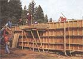

Above Left: A perimeter concrete foundation supports the walls, as plumbing and electrical supply lines enter and exit the building where needed. Steel reinforcing bars extend from the foundation as structural earthquake insurance. Above Right: A completed wall panel resting on foundation.